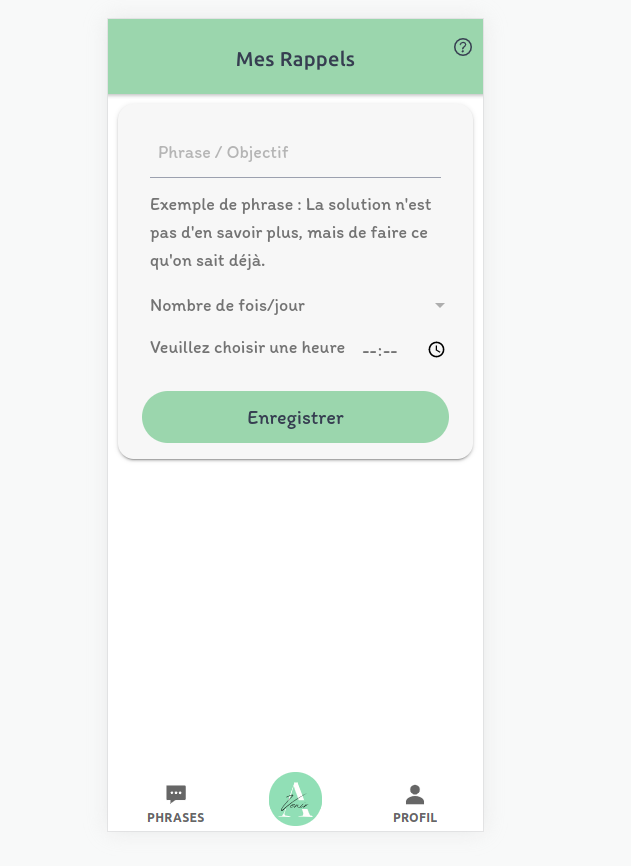

Entreprise : Avenir
Les technologies : Ionic pour le frontend, NestJS pour le backend et MariaDB comme base de données.

Le projet Avenir représente une initiative mobile visant à cultiver une mentalité positive chez ses utilisateurs. Mon rôle essentiel dans ce projet a été la conception d'un formulaire permettant aux utilisateurs de partager des messages positifs et la mise en place d'une fonctionnalité de rappels quotidiens personnalisables. En permettant aux utilisateurs de programmer des rappels basés sur leurs messages inspirants.